The web interface stores the merged multilingual wordnet in a single SQLite database (cygnet.db). The schema follows the Python wn module’s SQLite layout where possible, with modifications for Cygnet’s merged, ILI-indexed structure.
The schema is optimized for size: text ID columns are omitted (the web interface uses integer rowids for all lookups), language codes are normalized into a lookup table, and only indexes needed by the web interface are created.

erDiagram
languages {
INTEGER rowid PK
TEXT code UK "e.g. en, de, cmn-Hans"
}
synsets {
INTEGER rowid PK
TEXT ili "e.g. i85041"
TEXT pos "NOUN, VERB, ADJ, ADV"
}
entries {
INTEGER rowid PK
INTEGER language_rowid FK
TEXT pos "NOUN, VERB, ADJ, ADV"
}
forms {
INTEGER rowid PK
INTEGER entry_rowid FK
TEXT form "surface form"
TEXT normalized_form "accent-stripped lowercase"
INTEGER rank "0 = lemma"
}
senses {
INTEGER rowid PK
INTEGER entry_rowid FK
INTEGER synset_rowid FK
INTEGER sense_index "disambiguation index"
}
definitions {
INTEGER rowid PK
INTEGER synset_rowid FK
TEXT definition
INTEGER language_rowid FK
}
synset_relations {
INTEGER rowid PK
INTEGER source_rowid FK
INTEGER target_rowid FK
INTEGER type_rowid FK
}
sense_relations {
INTEGER rowid PK
INTEGER source_rowid FK
INTEGER target_rowid FK
INTEGER type_rowid FK
}
relation_types {
INTEGER rowid PK
TEXT type UK "e.g. antonym, class_hypernym"
}
examples {
INTEGER rowid PK
TEXT example
}
sense_examples {
INTEGER rowid PK
INTEGER sense_rowid FK
INTEGER example_rowid FK
}
example_annotations {
INTEGER rowid PK
INTEGER example_rowid FK
INTEGER start_offset
INTEGER end_offset
INTEGER sense_rowid FK
}
definition_annotations {
INTEGER rowid PK
INTEGER definition_rowid FK
INTEGER start_offset
INTEGER end_offset
INTEGER sense_rowid FK
}
languages ||--o{ entries : "language_rowid"
languages ||--o{ definitions : "language_rowid"
entries ||--o{ forms : "entry_rowid"
entries ||--o{ senses : "entry_rowid"
synsets ||--o{ senses : "synset_rowid"
synsets ||--o{ definitions : "synset_rowid"
synsets ||--o{ synset_relations : "source_rowid"
synsets ||--o{ synset_relations : "target_rowid"
senses ||--o{ sense_relations : "source_rowid"
senses ||--o{ sense_relations : "target_rowid"
senses ||--o{ sense_examples : "sense_rowid"
senses ||--o{ example_annotations : "sense_rowid"
senses ||--o{ definition_annotations : "sense_rowid"
examples ||--o{ sense_examples : "example_rowid"
examples ||--o{ example_annotations : "example_rowid"
definitions ||--o{ definition_annotations : "definition_rowid"
relation_types ||--o{ synset_relations : "type_rowid"
relation_types ||--o{ sense_relations : "type_rowid"Lookup table for language codes, referenced by integer FK from entries and definitions.
CREATE TABLE languages (
rowid INTEGER PRIMARY KEY,
code TEXT NOT NULL UNIQUE -- ISO 639: "en", "de", "cmn-Hans"
);rowid code
───── ────────
1 ckb
2 de
3 en
...A synset (= Cygnet Concept) groups senses that share a meaning.
CREATE TABLE synsets (
rowid INTEGER PRIMARY KEY,
ili TEXT, -- bare ILI identifier: "i85041"
pos TEXT NOT NULL -- NOUN, VERB, ADJ, ADV, ...
);rowid ili pos
───── ────── ────
1 i1 ADJ
35549 i35549 NOUNDiffers from wn: no lexicon_rowid (Cygnet merges all wordnets). No text id column (saves ~4 MB; ILI is used for display).
An entry (= Cygnet Lexeme) is a word in a specific language with a grammatical category.
CREATE TABLE entries (
rowid INTEGER PRIMARY KEY,
language_rowid INTEGER NOT NULL REFERENCES languages(rowid),
pos TEXT NOT NULL -- NOUN, VERB, ADJ, ADV, ...
);rowid language_rowid pos
────── ────────────── ────
88234 3 NOUNDiffers from wn: language_rowid FK instead of text (in wn, language comes from a lexicons table). No text id column (saves ~80 MB).
Surface forms (wordforms) for an entry. Rank 0 is the lemma (citation form); higher ranks are inflected/variant forms.
CREATE TABLE forms (
rowid INTEGER PRIMARY KEY,
entry_rowid INTEGER NOT NULL REFERENCES entries(rowid),
form TEXT NOT NULL, -- surface form: "banks"
normalized_form TEXT, -- accent-stripped lowercase: "banks"
rank INTEGER DEFAULT 1 -- 0 = lemma
);rowid entry_rowid form normalized_form rank
───── ─────────── ───── ─────────────── ────
1 88234 bank bank 0
2 88234 banks banks 1Differs from wn: added normalized_form for accent-insensitive search. No UNIQUE constraint (duplicates filtered at insert time).
A sense links an entry to a synset – it represents one meaning of a word.
CREATE TABLE senses (
rowid INTEGER PRIMARY KEY,
entry_rowid INTEGER NOT NULL REFERENCES entries(rowid),
synset_rowid INTEGER NOT NULL REFERENCES synsets(rowid),
sense_index INTEGER DEFAULT 1 -- disambiguation: bank_1 vs bank_2
);rowid entry_rowid synset_rowid sense_index
────── ─────────── ──────────── ───────────
127932 88234 35549 1
127933 88234 31364 2sense_index is computed per (language, lemma, pos) group, so English “bank” as a noun has indices 1–18 while German “Bank” as a noun has 1–3.
Differs from wn: no text id column (saves ~149 MB).
Definitions (= Cygnet Glosses) for a synset in a given language.
CREATE TABLE definitions (
rowid INTEGER PRIMARY KEY,
synset_rowid INTEGER NOT NULL REFERENCES synsets(rowid),
definition TEXT,
language_rowid INTEGER REFERENCES languages(rowid)
);rowid synset_rowid definition language_rowid
───── ──────────── ──────────────────────────────────────────────────────────── ──────────────
1 1 (usually followed by `to') having the necessary means or ... 3A synset may have definitions in multiple languages.
Directed relations between synsets (hypernymy, meronymy, etc.). Both forward and inverse directions are stored explicitly.
CREATE TABLE synset_relations (
rowid INTEGER PRIMARY KEY,
source_rowid INTEGER NOT NULL REFERENCES synsets(rowid),
target_rowid INTEGER NOT NULL REFERENCES synsets(rowid),
type_rowid INTEGER NOT NULL REFERENCES relation_types(rowid)
);Directed relations between senses (antonymy, derivation, etc.).
CREATE TABLE sense_relations (
rowid INTEGER PRIMARY KEY,
source_rowid INTEGER NOT NULL REFERENCES senses(rowid),
target_rowid INTEGER NOT NULL REFERENCES senses(rowid),
type_rowid INTEGER NOT NULL REFERENCES relation_types(rowid)
);Lookup table mapping relation type names to integer IDs.
rowid type
───── ──────────────────
1 antonym
2 derivation
3 derivation_of
4 pertainym
...
9 class_hypernym
10 class_hyponym22 types total: antonym, derivation, derivation_of, pertainym, pertainym_of, participle, participle_of, opposite, class_hypernym, class_hyponym, part_meronym, part_holonym, member_meronym, member_holonym, entails, entailed_by, substance_meronym, substance_holonym, causes, caused_by, instance_hypernym, instance_hyponym.
Example sentences, stored once and linked to senses via a junction table.
CREATE TABLE examples (
rowid INTEGER PRIMARY KEY,
example TEXT NOT NULL -- "they pulled the canoe up on the bank"
);
CREATE TABLE sense_examples (
rowid INTEGER PRIMARY KEY,
sense_rowid INTEGER NOT NULL REFERENCES senses(rowid),
example_rowid INTEGER NOT NULL REFERENCES examples(rowid)
);Character-offset annotations marking which token in an example corresponds to which sense.
CREATE TABLE example_annotations (
rowid INTEGER PRIMARY KEY,
example_rowid INTEGER NOT NULL REFERENCES examples(rowid),
start_offset INTEGER NOT NULL,
end_offset INTEGER NOT NULL,
sense_rowid INTEGER NOT NULL REFERENCES senses(rowid)
);example_rowid start_offset end_offset sense_rowid
───────────── ──────────── ────────── ───────────
1 32 36 127932This means characters 32–36 of example 1 (“bank”) are annotated as sense 127932.
Same structure as example_annotations, for definitions. Currently empty (no definition annotations in the source data).
CREATE TABLE definition_annotations (
rowid INTEGER PRIMARY KEY,
definition_rowid INTEGER NOT NULL REFERENCES definitions(rowid),
start_offset INTEGER NOT NULL,
end_offset INTEGER NOT NULL,
sense_rowid INTEGER NOT NULL REFERENCES senses(rowid)
);-- Find all English senses of "bank"
SELECT s.rowid, f.form, l.code as language, syn.pos, s.sense_index
FROM forms f
JOIN entries e ON f.entry_rowid = e.rowid
JOIN languages l ON e.language_rowid = l.rowid
JOIN senses s ON s.entry_rowid = e.rowid
JOIN synsets syn ON s.synset_rowid = syn.rowid
WHERE f.normalized_form = 'bank' AND l.code = 'en';rowid form language pos sense_index
────── ──── ──────── ──── ───────────
127932 bank en NOUN 1
127933 bank en NOUN 2
...
127949 bank en VERB 1SELECT l.code as language, d.definition
FROM definitions d
JOIN languages l ON d.language_rowid = l.rowid
WHERE d.synset_rowid = 35549
ORDER BY l.code;language definition
──────── ──────────────────────────────────────────────────
bg Място в непосредствена близост до море или река.
ca Terra inclinada (especialment la que se troba al...
en sloping land (especially the slope beside a body of water)
ro Perete, margine (abruptă) a unui râu, ...SELECT e.example, ea.start_offset, ea.end_offset
FROM examples e
JOIN sense_examples se ON se.example_rowid = e.rowid
JOIN example_annotations ea ON ea.example_rowid = e.rowid
AND ea.sense_rowid = se.sense_rowid
WHERE se.sense_rowid = 127932;example start_offset end_offset
───────────────────────────────────── ──────────── ──────────
they pulled the canoe up on the bank 32 36
he sat on the bank of the river and 14 18Only indexes used by the web interface are created:
| Index | Column(s) | Purpose |
|---|---|---|
idx_forms_normalized |
forms.normalized_form |
Word search |
idx_forms_entry |
forms.entry_rowid |
Look up forms for an entry |
idx_senses_entry |
senses.entry_rowid |
Look up senses for an entry |
idx_senses_synset |
senses.synset_rowid |
Look up senses for a synset |
idx_definitions_synset |
definitions.synset_rowid |
Definitions for a synset |
idx_synset_relations_source |
synset_relations.source_rowid |
Outgoing synset relations |
idx_sense_relations_source |
sense_relations.source_rowid |
Outgoing sense relations |
idx_sense_examples_sense |
sense_examples.sense_rowid |
Examples for a sense |
idx_example_annotations_example |
example_annotations.example_rowid |
Annotations for an example |
wn module schemawn module |
Cygnet DB | Reason |
|---|---|---|
lexicons table with language |
languages lookup table |
Cygnet merges all wordnets; no per-lexicon metadata |
lexicon_rowid FK on most tables |
absent | Single merged resource |
Text id column on synsets, entries, senses |
absent | Saves ~232 MB; web interface uses integer rowids |
forms UNIQUE(entry_rowid, form) |
no constraint | Saves ~35 MB autoindex; dupes filtered at insert |
| language as TEXT in entries, definitions | language_rowid INTEGER FK |
Saves ~20 MB |